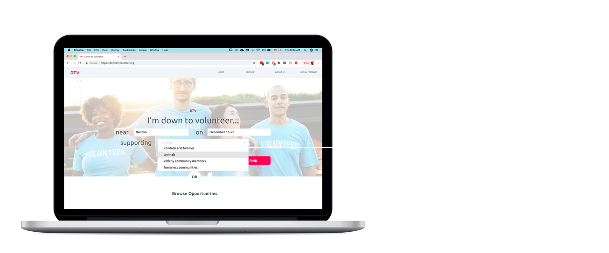
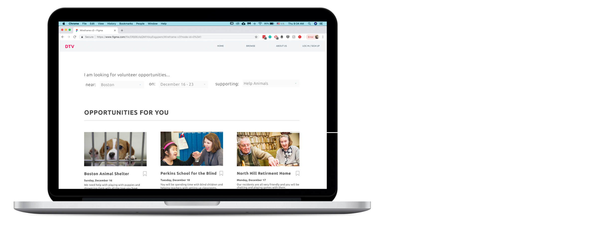
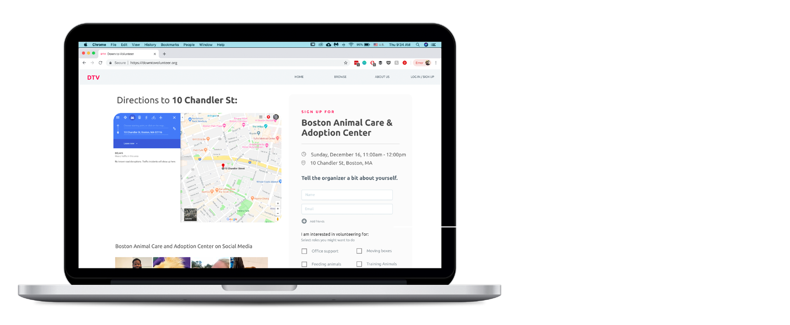
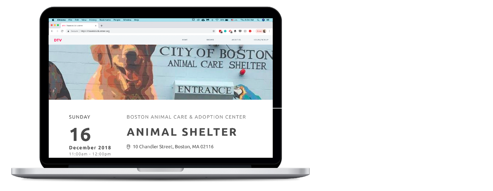
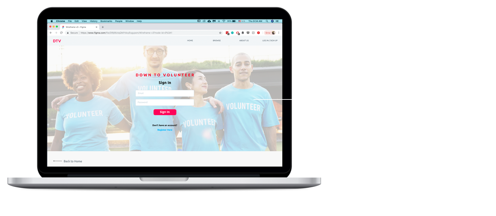

Final Design Refinement
Formal Usability Study
First off, we conducted a formal usability study in order to determine the most effective layout for the event listings page. The results of the study are helpful to read because they informed our choices for the page layout. Moving on....What is DTV?
Down to Volunteer (DTV) is a website that creates a seamless and frictionless environment for users to discover and participate in volunteering. We aim to shift the narrative around volunteering, making doing good for others a fun social event requiring minimal activation energy instead of an obligation or a hassle.Rationale
We identified a problem in the current system around discovering and signing up for new volunteering opportunities. Often the process involves copious amounts of time with minimal returns. Volunteering events are spread across the internet on cluttered word documents or excel spreadsheets that remove the human aspect of the opportunities and made follow up and signup difficult. DTV combats these issues head on, curating personalized volunteering opportunities for users and streamlining them through the information retrieval and signup process. Through notes from organizers, pictures, and direct contact information, the connection between organizers and potential volunteers is restored, making users more likely to hit the “‘sign up” button.DTV supports the development of new communities around volunteerism by promoting volunteering with friends so that more people ultimately volunteer. User retainment also grows as people enjoy volunteering alongside their friends, and are then more likely to volunteer again, bringing more hands to the organizations.
Our Users
Here for it Harry isn’t normally the one to find events but is willing to join and help out a friend. He has gotten excited about the events he has been to and may even start trying to find opportunities on his own. Harry really values the community and social interactions around volunteerism but is too busy in his day to day life to find opportunities of his own given the complexity of the current system.Obligated Oscar finds fulfillment from the volunteering opportunities he participates in but is really just “here to get it done”. He volunteers because it is a requirement for school but still wants to find interesting volunteer events. Unfortunately, Oscar isn’t willing to put in the time to find those events with the current system so he goes to whatever events are the easiest to get to but makes sure to bring his friends to make it more fun.
Features
Browse
Browse is the page a user will probably spend the most time on, as it presents opportunities that are both local and relevant, curated by filters. At a glance the opportunity cards give users the most basic of information that might catch their interest and determine suitability. More information can be seen by clicking on an opportunity so users don’t feel left in the dark about what they may be signing up for.A major reason volunteering seemed so repellant to users during interviews was that the opportunities they found through other online sources or school offices were either not interesting to them or too far away to justify the travel time, especially with many high schoolers constrained in transportation. The browse page seeks to remedy this by presenting users with a single page for all opportunities, which can further be focused based on location, dates, or interest through filters. The layout of the cards themselves also presents a reasonable amount of information and opportunities at once so users know there are many opportunities out there, while not feeling overwhelmed or missing something by having too much on the page.
The layout of the browse page was something we worked on from the start of wireframing. Throughout our user interviews, paper prototype, heuristic evaluations, and formal usability studies, users were split over what information needs to be and should be on the page. After numerous talks with users and the teaching team, we finally settled on filters on the top with the opportunity cards laid out in a Nx3 grid. This seemed to best convey the actions and focus we wanted the user to have while not overwhelming them. The top facing filters were purposely not on the left so as not to detract from the content of the page. Instead users’ visual capacity is freed up to focus on browsing through the opportunities for volunteerism in their community. Even within the cards, the layout of picture then text came about to clearly define the cards as separate from one another.
As mentioned, our browse page went through a lot of iterations. Originally we had two browse pages, one as a map and another more akin to our final layout except as more of a list than a grid. As the map broke from a lot of web conventions and confused our users, we moved away from it. We changed from a list to grid layout for the cards. Originally we were afraid that a grid layout was too dense and would overwhelm the user. Through research into other sites and user feedback we found this was not the case. Finally within the cards themselves we ended up paring down the information to the current list of essential content.
Searching
Down to Volunteer streamlines the search and signup process around participating in volunteering opportunities. With users like “Obligated Oscar” in mind, the site needed to focus on minimizing the time spent mindlessly browsing and researching events by allowing the user to select location, time, and topic preferences.Sharing with Friends
The primary users - the Obligated Oscars - for Down to Volunteer are not signing up for events to make an impact; rather, much of the population is expected to volunteer in order to fulfill a particular requirement. With this in mind, the entire site’s experience is designed to make the act of volunteering as much fun as possible. For Obligated Oscar, this means ensuring that volunteering can easily become a social event for them. On the other hand, the easily accessible "share with friends" option also ensures that the site encourages users to reach as many Here for It Harry’s as possible.RSVP and Event information
We wanted to make it as easy as possible for users to quickly eliminate irrelevant volunteer opportunities so we chose to include a separate page with all the of the important details regarding a particular event. Specifically, we anticipate users navigating to the RSVP and addition event details page ready sign up once they feel like they have enough information about the activity.Much of the information on this page is designed so that nothing demands the user’s attention. This allows for the Obligated Oscars to jump immediately to sign up without having to navigate through unnecessary information. It also allows for Here for it Harry’s to learn more about the opportunity his friend had just shared with him.
All the interactions necessary to sign up for an event are housed within the floating box that follows the user as they scroll through the events details page. This is a subtle nudge to remind users to sign up if they feel like the event is the right fit. The sign up piece is the ultimate conversion goal for this page so we felt like it was necessary to keep it at the forefront..
The RSVP page was ultimately combined with the events details page minimize the activation energy necessary for the user to commit to the volunteer opportunity they are browsing. Specifically, by putting the two actions side by side, the user is able to directly reference the job descriptions while selecting which roles they would like to be considered for.
Logging In and Out
The option of creating an account largely came from very specific user feedback from our testing sessions. We elected to keep the sign up option in the background so as to ensure that there are no unnecessary steps between a potential volunteer landing on our page and committing to an opportunity. However, the login mechanism is especially relevant for the Obligated Oscars within our users. This allows for them to easily sign up for previous activities again -- a feature especially helpful if they need to fulfill a volunteer hour requirement.Important Decisions
    Shortcomings and Further Work
Lack of organizer interface: We recognize that for our design to make a difference, we need buy-in from organizers. While bringing organizers to the site is essential to the value proposition of the site, up until now we have chosen to focus our design energy on the volunteers because we believe that ultimately, building a community of people who want to volunteer is Step 1 - and it will call organizers to the site.Limited event options: In prototyping phases, we used real organizations. However, we limited ourselves to certain search criteria (near Boston, on an arbitrary date, helping animals) so the events shown are quite limited. Like the above note about not focusing on organizers, the options would expand massively with real organizers on the site posting their events, and also with a website that allows more drop-down selections (not a wireframe).
∑ Individual Efforts < Team Results
Philipa: In this phase I took ownership of the different iterations of the browse page. We iterated a couple times based off of user feedback and discussions with the teaching team. For the formal usability study, I interviewed several users. I also worked on standardizing the visual elements in the Figma wireframe as well as troubleshooting some bugs in the prototype.Sam: I worked on the formal usability study, writing metrics and interviewing potential users. I made the profile and about us pages in figma and worked to standardize and identify and fix bugs among the pages. I also wrote the outline for the final refinement and focused on the story writing within the final refinement document.
Gracey: In this phase, I tested the formal usability study with several users, and contributed writing to the formal usability and final refinement phase page, as well as testing the figma prototype for bugs and increasing consistency in the formatting. I also continued updating the website.
Ben: This phase I worked on implementing the login functionality and a lot with the Figma wireframing site as a whole, cleaning up any broken features and ensuring consistency between pages. For the formal usability study I interviewed several users.
April: In this phase, I worked on the website, helping with the smaller issues as well as more major alterations, such as combining the rsvp and event page. I contributed to writing the formal usability study and final refinement page. I also worked on presenting the design decisions and rationale that we made as a team.